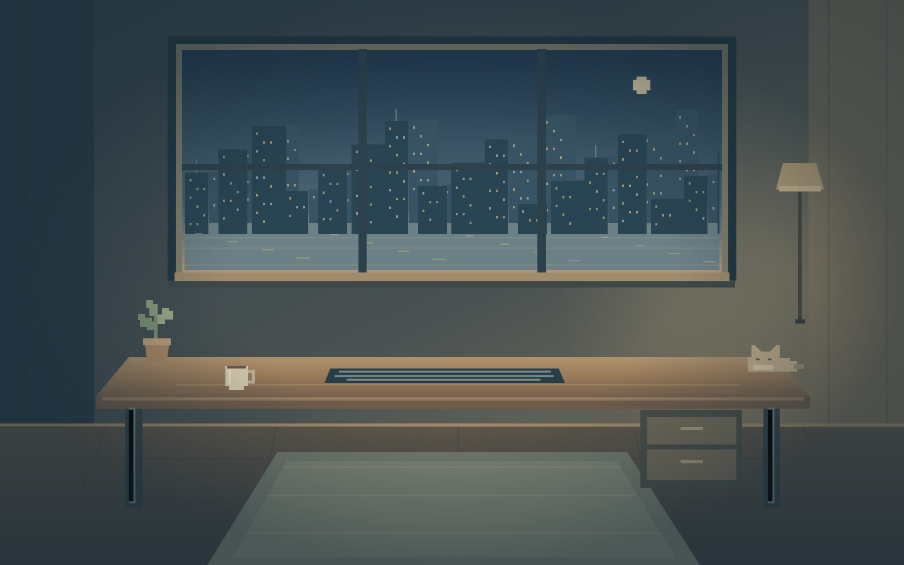

控制室待机中

窗外环境
进入计划台 ↗
进入执行台 ↗
进入状态台 ↗
当前状态
▧
人生后台
.
LIFE CONTROL ROOM
← 返回房间
计划台
执行台
状态台
个人控制室
/
执行台
● 控制室已就绪
▤
计划台
收集 · 整理 · 安排
01
今日要事
＋ 添加任务
▣
Inbox · 收集箱
＋ 添加收集项
日程
今日
＋ 添加日程
ϟ
执行台
专注当下 · 推进当前任务
02
◇ 当前主线
切换主线 ↗
◎
当前任务
✓ 完成任务
暂停
◷ 专注计时
番茄钟 · 25 分钟
准备好，慢慢来
25:00
一次只做一件事
↺
▶ 开始专注
Ⅱ
↳ 下一步
小步推进
＋ 添加下一步
▥
状态台
觉察 · 调整 · 休息
03
今日状态
编辑状态 ↗
♧ 支线任务
＋ 添加支线任务
☾ 休息模式
留一点空白
◷
10 分钟放松
♫
听一段音乐
♧
冥想呼吸
☾
去睡觉
☾ 进入休息模式
LIFE CONTROL ROOM
×